Thesis Research
During my time in Graduate School at Clemson University, I had the
opportunity to write a thesis in an area of focus. My area of focus
was on Composite Materials which is a combination of materials to make
an optimized material. More specifically, I dealt with Bistable
Laminates which comprise of layers of composite materials.
My Thesis was on An Application of Optimized Bistable Laminates as a
Low Velocity, Low Impact Mechanical Deterrent
Abstract:
This research considers the problem of using bistable laminates as a
mechanical deterrent to the impending impact of a particle. The
structure will be controlled through an algorithm that will utilize
piezoelectric devices to activate them in unison with the bistable
laminate to successfully deter. A novel experimental setup will be
constructed to ensure that the bistable laminate stays fixed when
acting as a mechanical deterrent.
Before we get into the content of this unique application, I am going
to break down the building blocks that we are going to use to get
there.
Smart Materials and Shape Morphing Structures
To start us off, the structure used in this application can be broken
down into two areas: smart materials and shape morphing structures.
Smart materials have the ability to couple between various physical
domains. An example of this used in this research are piezoelectric
materials which have the ability to go between the electrical and
mechanical domains. Next, is shape morphing structures which change
shape without external tools. They have a trade off of being light,
load carrying, and shape adaptable but all three cannot exist at once.
An example of this is bistable laminates.
 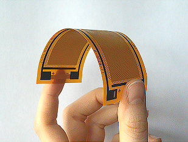
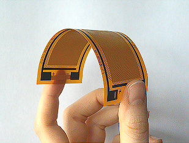
Basics of Bistable Laminates
So, bistable laminates have two stable shapes and consist of thin
layers of composite materials. The reason that it is bistable is due
to its geometry as well as residual stresses that occur after
fabrication. An interesting story is that when i was fabricating these
laminates :once it comes out of the oven, it is still flat but once
you remove the fabrication it converts to its bistable shape. On the
slide here are the two stable shapes of the bistable laminate as well
as some applications which are daylight control and morphing a car
fender.
 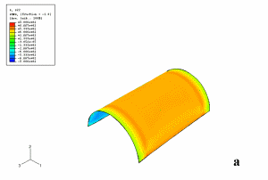
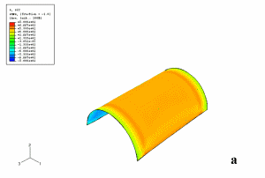
Here are some research questions for you to ponder which correlate to
the actuation, morphing, as well as the consistency and success of the
experimental setup.
1. Is there a correlation between actuation time and voltage supplied
to the mechanism?
2. Where is the ideal spot in the morphing motion to ensure the
deflection of the particle?
3. Can the mechanism consistently deflect the projectile over time?
4. How successful is the overall setup?
Composite Materials
A composite is where two or more constituent materials of varying
properties are combined to create a new structural material. By
utilizing the properties of the individual materials into a composite,
the structure can become enhanced based on selected individual
properties. Example : Fiberglass where the resin would be the matrix
and glass fibers would be the fiber reinforcement.
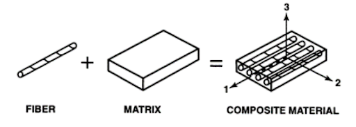
Makeup of Composite Materials
A composite laminate is similar to a stack of papers but instead of
paper, we have lamina which is a thin layer or ply of composite
material. Defined by direction, stacking sequence, and geometry.
Common in various fields: sports, construction, cars
Bistable Laminates
Snap-through behavior can occur when external forces or moments are
induced to the laminate at one stable state. Hyer created a system of
polynomials to determine the shape and other characteristics The
deformation can be described from these polynomials. Characteristics
can vary based on: ply amount, ply orientations, edge lengths, shape,
material properties.
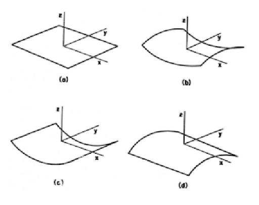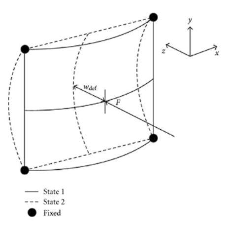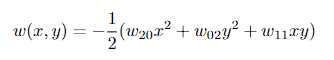
Piezoelectric Actuators
Electromechanical coupling which means that they will transfer
electrical energy into mechanical energy or vice versa. First
engineering application of the piezoelectric effect was a transducer
which was used to locate submarines Commonly seen in motion and force
sensors, accelerometers, and actuators. Comprised of rectangular
piezo-ceramic rods that are wedged between polyimide film, electrodes,
and structural epoxy. the MFC is used as an actuator then the
composite can distort materials, counteract and generate vibrations.
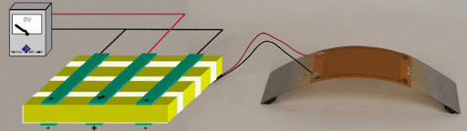
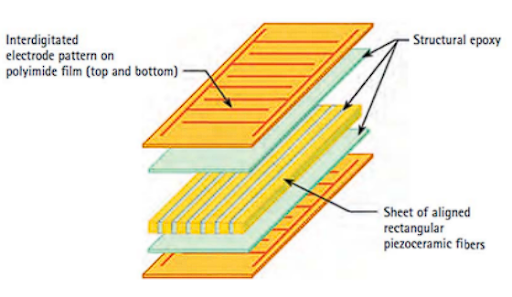
Genetic algorithm
Optimization method that evolves over time to produce the fittest
individuals in complex systems. Comprises of Individuals, Population,
and Generations. Can solve constrained and unconstrained optimization
problems.
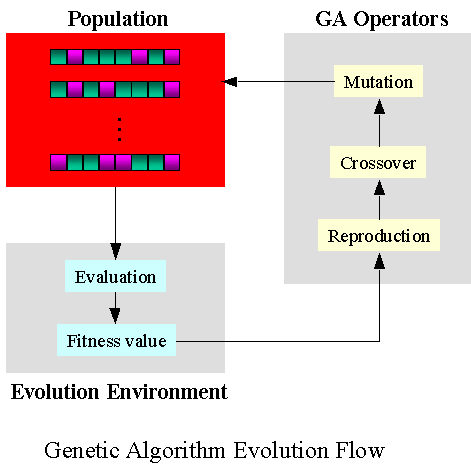
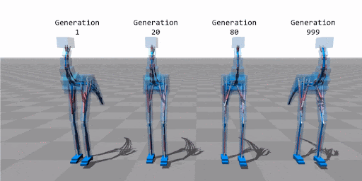
Potential Energy of Bistable Laminate and MFC
Up to this point, the equation is based on the laminate stacking
sequence, material properties, and temperature effects. Integration
about the x and y edge lengths will turn into a highly non-linear
polynomial of 15 unknowns.
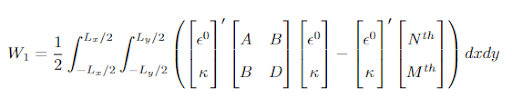
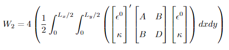
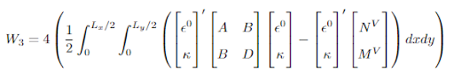
For Laminate and MFC configurations, Bonding : W1 + W2 Applied Voltage
: W1 + W3
Solving Potential Energy
Differentiate the total potential energy with respect to each of the
unknowns, this gives 15 equations for 15 unknowns
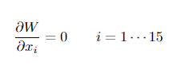
For solving, these equations were solved in the Python Programming
Language utilizing the non-linear solvers of the SciPy library.
Evaluating Total Deformation and Transverse Strain
Total Deformation is the out-of-plane (z) distance that the laminate
traveled. Strain represents a non-dimensional value of the change in
length over the original length. micrometer per meter (μm/m = 10-6 m/m
= ppm) is commonly used.
Optimization
Randomize the Population of Edge Lengths Plug into the 7 Potential
Energies Solve for the unknowns Calculate Fitness: Fitness = Total
Deformation Fitness = Total Deformation*Strain Improvement: Yes =
Mutate Top Result +- 20 % No = Stop
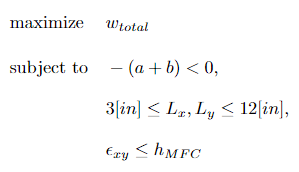
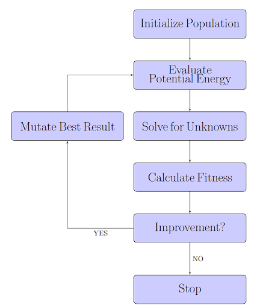
Experimental setup
Right Laminate edge free to move along z = 0 Fixed Boundary Condition
on Left Laminate edge Apply voltage to MFC Actuator to cause snap
through
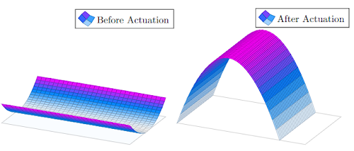
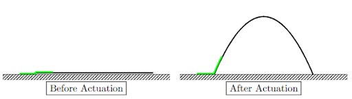
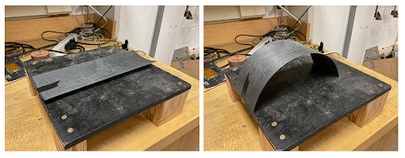
Computer / LabView : Controls Voltage amount and time delay Data
Acquisition (DAQ) : Outputs Voltage to High Voltage Amplifier High
Voltage Amplifier : Amplifies Output Voltage to MFC Laminate + MFC :
Morphs Laminate to deter Projectile Projectile : Free Fall into
Laminate + MFC
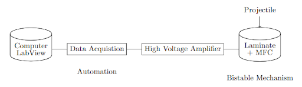
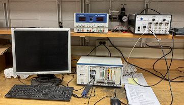
Fabrication Results
1/7 Conducted Snap Through 2/7 Actuated Correctly 3/7 Avoided Second
Shape Several provided out-of-plane deformation despite incorrect
actuation.
Application Results
images Here
General Discussion
Rectangular shape did show lower strain than Square which proved
Murrayw’s results The strain had a different trend than deformation
Strain and MFC contour results presented large errors Due to the
non-linear solver being sensitive to initial guess and converges to
closest minima Optimal Laminate Size too large due to error in
transverse strain Trimming of the laminate helped offset the error but
reduces total deformation and increases area covered by MFC Some
configurations were unable to maintain second shape due to bonding
issues Despite shortcomings, out-of-plane deformation was still
experienced This led to a successful deflection event which verifies
that the structure can be used as a mechanical deterrent
Answering the Research questions
Is there a correlation between actuation time and voltage supplied to
the mechanism?
The time difference between the start to finish of the patch was
instantaneous. During the free fall experiment, it took the ball ~400
ms to hit the laminate but the time delay for actuation to get the
timing correct was ~200 ms. The remaining 200 ms could answer the
correlation.
Where is the ideal spot in the morphing motion to ensure the
deflection of the particle?
This research considered the halfway point of the total deformation to
be the optimal spot to place the particle. There may be differences in
the speed of the laminate depending on the shape, layup, and voltage.
Can the mechanism consistently deflect the projectile over time?
The ping-pong ball was dropped repeatedly at a fixed height and
consistently landed on the surface area of the laminate. The
deflection experienced on the projectile varies depending on where it
landed. Some knockback was observed before forcing the ball away.
How successful is the overall setup?
Despite a consistent setup, the actuation either happened too early or
late. Several tries were made before the structure successfully hit
the projectile. This could be alleviated with a greater deformation
range for the particle to fall into before the actuation activates.
Future Research
Computer Vision Methods: Projectile can be tracked regardless of its
trajectory. With frequent calculations to the time until impact for
the projectile can increase success rates.
Car Bumper: The bistable laminate could be the bumper of the car and
if an object comes in contact with it, it can morph at the appropriate
time to absorb impact. This scenario would save lives due to the
reduction of impact